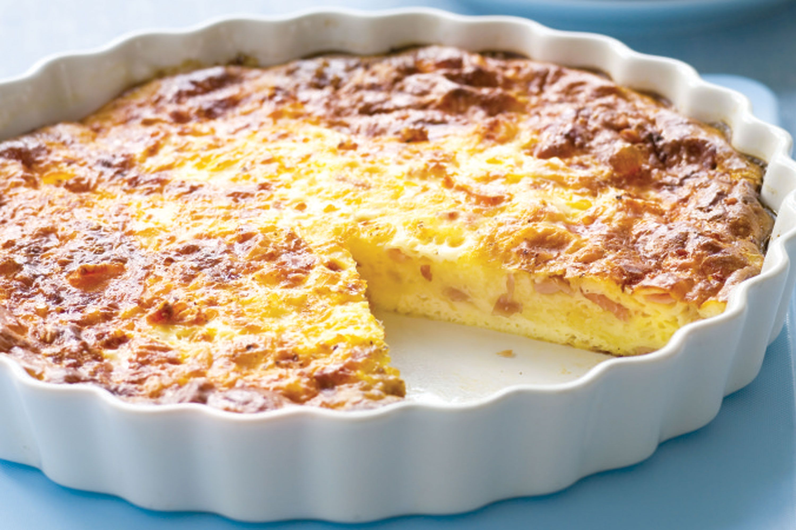

Quiche

Description
I learned this recipe at "manual". "Manual" was an off-school class, held weekly, which was either cooking or wood-working. My family still
make this recipe 35 years later!
The quiche is crustless and made with eggs, flour, bacon, onion and cheese.
Ingredients
- eggs
- flour
- baking powder
- milk
- cheese
- cooked bacon
- onion
- salt
- pepper
Steps
- Mix flour, baking powder, salt and pepper in a bowl
- beat eggs and mix into dry ingredients
- Chop cooked bacon into slices and add to bowl
- Chop onion and add to bowl
- Grate cheese and add one cup to bowl
- Mix ingredients in bowl
- Grease a dish and add ingredients
- Top dish with remaining grated cheese
- Cook quiche for 20 minutes or until brown on top.